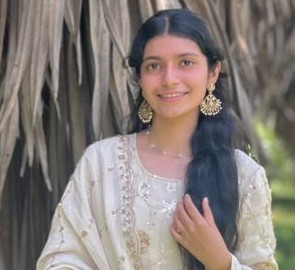

PROFESSIONAL PROFILE
My Resume
A summary of my education, skills and academic experience.
Ayesha Mufeeda
B.E. Computer Science & Engineering Student

Career Objective
Motivated Computer Science Engineering student with a strong interest in software development and problem-solving. Seeking an opportunity to enhance technical skills, gain practical experience, and contribute effectively to organizational growth.
Educational Qualifications
| Qualification | Institution | Year | Marks / CGPA |
|---|---|---|---|
| B.E. (CSE) | Vivekananda College of Engineering & Technology, Puttur | 2028 | 8.5 CGPA (Current) |
| PUC | St. Philomena PU College, Philonagar, Darbe, Puttur | 2024 | 88% |
| SSLC | St. Victor Girls' High School, Puttur | 2022 | 91% |
Technical Skills
- HTML
- CSS
- JavaScript
- Python
- C Programming
- MySQL
Certifications
- Certificate 1: Full Stack Development
- Certificate 2: Data Structures and Algorithms
Learn
Grow
Achieve
Academic Projects
Local Tourism Recommendation Website
Developed as a team project to help users explore nearby tourist attractions through recommendations and distance information.
Technologies: HTML, CSS, JavaScript, Python, Flask and MySQL.
Blood Donor Management System
Developed a Blood Donor Management System to connect blood donors with people in need of blood. The system helps manage donor details, blood group information, and requests, making the process of finding suitable donors easier and faster.
Technologies: HTML, CSS, JavaScript, Python, Flask and MySQL.
Activities
- Participated in college activities and academic presentations.
- Worked collaboratively on team-based project tasks.
Personal Strengths
- Willingness to learn
- Teamwork
- Creative thinking